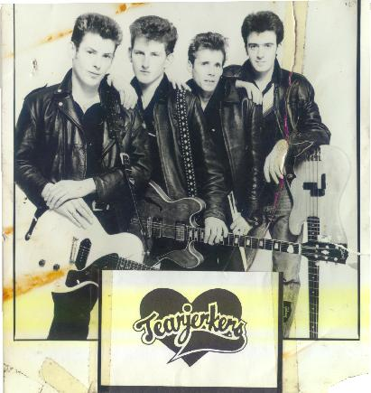
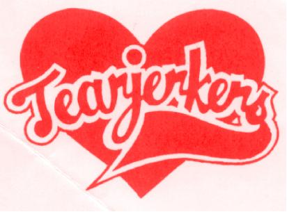

THE TEARJERKERS

Roddy formed the Tearjerkers with his brother Mark in mid ’81. The Specials by this time had stopped playing live gigs due to the constant outbreaks of violence at shows; they eventually broke up after Ghost Town hit the number one spot in the UK charts.
This meant that Roddy could concentrate on the Tearjerkers full-time and also allow Roddy to play the music he loved.
The band released one single Desire b/w Western Song on the independent label Chiswick Records. Also produced were a four-track promo single and a cassette tape.
Unfortunately the band were never destined for chart success as the New Romantic sound had become popular and was dominating the top 40 at the time.
The band had a very strong fanbase though and managed to keep on playing live gigs to appreciative up until 1986 when they eventually called it a day.
Judging by the comments from people who have bought the Skabilly Rebel CD, many people have very fond memories of the Tearjerkers days.
Band line up:
Roddy Radiation : Vocals / Guitar
Mark Byers : Guitar / Vocals
Pete Davies : Drums
Joe Hughes : Bass
Slim : Accordion
